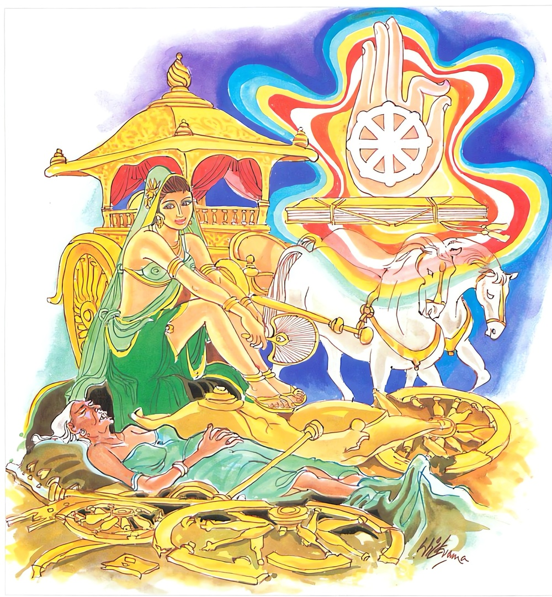

11-6 මල්ලිකා දේවිය ගෙතූ බොරුව
මෙම කතාව ධම්මපද අටුවාවෙන් ද කියවන්න.
ජීරන්ති වෙ රාජරථා සුචිත්තා
අථො සරීරම්පි ජරං උපෙති
සතඤ්ච ධම්මො න ජරං උපෙති
සන්තො හවෙ සබ්භි පවෙදයන්ති.
(මුතු මිණි ඈ සත්රුවනින් ද සෙසු රථාලංකාරයෙන් ද) විශේෂයෙන් විසිතුරු කරණ ලද රජුන්ගේ මගුල් රථයෝ ද ඒකාන්තයෙන් ජරාවට පැමිණෙති (මහලු ව දිරති). නැවත (කවා පොවා නහවා උළා හඳවා පලඳවා නොයෙක් ලෙස පරිහරණය කරණ ලද) මේ සිරුර ද (වයස් මිහිකිරීමෙන් ඛාණ්ඩිත්යාදියට පැමිණෙමින්) ජරාවට එළැඹෙයි. (බුද්ධාදි සත්පුරුෂයන්ගේ) නව ලෝකෝත්තර ධර්මය වනාහි ජරාවට නො පැමිණෙයි. (බුද්ධාදි) සත්පුරුෂයෝ සත්පුරුෂයන් හා සමග ඒකාන්තයෙන් බණන්නාහු ය.

එක් දවසක් මල්ලිකා තොමෝ නාන කොටුවට ගොස් මූණ කට සෝදා පා සෝදන්නට නැඹුරු වූවා ය. ඒ වේලෙහි ඇය හා නාන කොටුවට වැදුනු රජගෙයි ම ඇති දැඩි වූ බල්ලෙක් බිසවුන් කෙරෙහි ඇලුම් කරන්නේ බිසවුන් නැමී සීට පා සෝදනු දැක පිටි පසින් අවුත් ඇයගේ පිටට අත් ගසා වල් කමෙහි යෙදෙන්නට පටන් ගත. මල්ලිකා ද බලු ඈත් නො කොට නිසොල්මනේ ඒ පහස සතුටින් ඉවසා සිටියා ය. කොසොල් රජ ඒ වේලහි රජ ගෙයි උඩුමාලේ කවුළුදොර ලඟ සිටියේ, මල්ලිකාවගේ හා බලුගේ ඒ අසද්යෝගය දැක, බිසවුන් රජගෙට ආ වේලෙහි, වෙත කැඳවා “බැල්ල! බැහැර යව, තෝ බැල්ලක, බල්ලකු හා එකතු වන්නී බැල්ලියක, එහෙයින් තෝ බැල්ලක, තෝ මිනිස් ගැහැණියක් නො වෙහි, බල්ලකු ගත්තෙහි, බල්ලකු හා සිටියෙහි කිමැ?” යි ගුගුලේ ය. මල්ලිකා තොමෝ කළ වරද වසා ගන්නට සිතා “දේවයන් වහන්ස! මොකද ඔතරම් ගෙරවිල්ලෙක්? මොකද මා කළ වරද? කියනු මැනැවැ” යි බියසුලු බව සඟවා කිවූ ය. එවිට රජ තෙමේ “ඇයි මගෙන් අසනු බලු හා කළ කම්? බලු හා කළ කම් දන්නෙහි තෝ, බලු හා බලුකම් කොට එය වසා ලන්නට සැරසෙහි දැන්, බැල්ල, බැහැර යව” යි නැවතත් ගුගුලේ ය. “දෙවයන් වහන්ස! ඉවසනු මැනවි, මම ඔය කියන අන්දමේ බලුකමක් නො කෙළෙමි, එතරම් අමාරුවක් මට නැත, මම මිනිස් දුවක්මි, බැල්ලක් නො වෙමි මම” යි මල්ලිකාව කී කල්හි රජ තෙමේ “මෑ මා ඇසින් දුටු කාරණය වසාලයි, තෝ බොරු කියහි, ඔය කියන කතාව මම නො පිළිගණිමි” යි කී ය.
එවිට මල්ලිකාව “දෙවයන් වහන්ස! මට කමන්න, උදහස් නො වන්න, ඔබවහන්සේ කියන කතාවත් ඇත්ත විය හැකි ය, මම එය පිළිගනීමි. අපේ ඔය නාන කොටුවට එකකු ගිය විට කවුළුවෙන් බලන්නකුට ඔහු පෙණෙන්නේ දෙදෙනකු සේ ය, මාගේ මේ කතාවේ ඇත්ත දැන ගැනීමට වුවමනා නම් ඔබතුමන් නාන කොටුවට යෑ යුතු ය, ඔබතුමන් එහි ගිය විට මම කවුළුවෙන් බලන්නම්” යි කිවූ ය. රජ තෙමේ, පියවි ගතියෙන් ම මෝඩගති ඇත්තකු බැවින් මල්ලිකාවගේ මේ කතාව අදහා නාන කොටුවට වැද සිටියේ ය. මල්ලිකා තොමෝ ද කවුළුව ලඟ සිට බලා රජු පෙරළා ආ කල්හි “මහරජ! මට තරවටු කරහු, මට නින්දා කරහු. මොක ද ඒ කළහු? රජ ව සිට බොහෝ ගණනක් බිසෝවරු හින්ද දී මේ ලෙසට එළුදෙනක හා වල්කම් කරණු ඔබට සුදුසු ද?” යි ඇසූ ය. රජ “මම එබන්දක් නො කෙළෙමි” යි කී කල්හි “කුමක් කියහු? මා දුටු දෙය වෙනස් කරන්නට ඔබට හැකි ද? නිදහසට කියන ඔය කතාව මට පිළිගණු නො හැකි ය” යි මල්ලිකා කියා සිටියා ය. රජ තෙමේ “මේ කියන කතාව ඇත්ත විය හැකි ය. නාන කොටුවට පිවිස සිටියේ බලන්නහුට දෙදෙනෙක් ව පෙනෙන්නේ ය යනු ඇත්ත ය” යි පිළිගෙණ මල්ලිකා කෙරෙහි වූ සැකය අත් හළේ ය.
ඉක්බිති මල්ලිකා තොමෝ “මේ රජ මෝඩයකු බැවින් මට රවටා ගත හැකි වී ය. එහෙත් මා කළේ පව් වැඩෙකි. පහත් වැඩෙකි. එය කාට වත් කියන්නට බැරිය. මම බොරුවෙන් රජුට නිග්රහ කෙළෙමි. බොරු කියා රජු රැවටීමි. එහෙත් බුදුරජානන් වහන්සේ මෙය දන්නා සේක. අග්ර ශ්රාවක දෙ දෙනා වහන්සේ දන්නා සේක. අසූ මහා ශ්රාවකයන් වහන්සේ දන්නා සේක. මා කළේ බරපතල වරදකැ” යි නිතර සිතන්නට වූ ය.
රජුගේ අසදෘශ මහාදානයෙහි එක දවස කළ පරිත්යාගය තුදුස් කෙළක් මට අගනේ විය. බුදුරජුන් හිස දැරූ සේසත වැඩහුන් පලඟ පාත්රය තැබූ පාත්රාධාරය සිරිපා තැබූ පා පුටුව යන මේ සතර ම පමණ අගනේ ය යි මිල නො කළැකි ය. මේ මහා දානයෙහි. මල්ලිකාව ද කටයුතු කළා ය. එහෙත් ඕ තොමෝ මරණාසන්නකාලයෙහි මේ එකකුත් සිහි නො කොට කළ පව් කම ම සිහියට ගෙණ මැරී ගොස් අවීචිමහානරකයෙහි උපන්නීය.
ඕ තොමෝ රජුට ප්රිය වූවා ය. එහෙයින් රජ තෙමේ බලවත් ශෝකයෙන් මිරිකුනේ ආදාහනය කොට මල්ලිකාව උපන් තැන විචාරමි යි සිතා බුදුරජුන් වෙත ගියේ ය. බුදුරජානන් වහන්සේ එකෙණෙහි ඔහු එහි පැමිණි කරුණ ඔහුට අමතක වන සේ ඉටා වදාළ සේක. රජු බුදුරජුන් ඉදිරියෙහි සිත් ඇලවිය යුතු වෙන බණ කතාවක් අසා පෙරළා මාලිගාවට ගිය කල්හි, නැවත අසා බලන්නට ගිය තරුණ සිහියට නැගී ආයේ ය. “මම මල්ලිකාව උපන් තැන අසන්නට සිතා බුදුරජුන් වෙත ගියෙමි. එහෙත් එය මට අමතක වී ය, අද නැවත එහි යනු නො හැකි ය” යි සිතා රජ තෙමේ පසුදා බුදුරජුන් වෙත ගියේ ය. බුදුරජානන් වහන්සේ එදාද එය ඔහුට අමතක වන සේ ඉටූ සේක. උන්වහන්සේ මේ ලෙසින් සත් දවසක් ම එය ඔහුට අමතක වන සේ ඉටූහ. මල්ලිකා ද සත් දවසක් නිරයයෙහි පැසී අටවනදා නිරයයෙන් ගැලවී තුසිත භවනයෙහි උපන්නී ය.
බුදුරජානන් වහන්සේ කුමක් නිසා මෙසේ ඉටා වදාළ සේක් ද යත්, මල්ලිකා තොමෝ, රජුට ඉතා ප්රිය ය. මන වැඩූ ය. එහෙයින් ඇය නිරයයෙහි උපන්බව දැන ගතු නම් රජ තෙමේ “මෙබඳු ශ්රද්ධාවත් දන් පින් බොහෝ කොට කළ මල්ලිකාත් නිරයයෙහි උපන්නී නම්, දන් දීමෙන් වැඩෙක් නැතැ” යි මිසදිටු ගෙණ පන්සියයක් භික්ෂූන් උදෙසා නිතර ගෙයි දෙන දන් නවතා නිරයයෙහි උපදින්නේ ය, යි දැන රජු කෙරෙහි කුළුණු සිතින් එසේ ඉටු සේක. මේ සත් දවස ඉක්ම ගිය තැන අටවන දා පිඬු සිඟා වඩනා සේක් රජ ගෙට වැඩි සේක. “බුදුරජානන් වහන්සේ වැඩි සේකැ” යි ඇසූ රජ තෙමේ මාලිගාවෙන් දොරට බැස පාත්රය ගෙණ උඩු මාලට නැගෙන්නට වන. බුදුරජානන් වහන්සේ රියහලෙහි වැඩ හිඳින්නට කැමැත්ත දැක්වූහ. රජ තෙමේ උන්වහන්සේගේ කැමැත්ත පරිදි එහි වඩා හිඳුවා කැඳ අවුලුපත් වළඳවා වැඳ පසෙක හිඳ “ස්වාමීනි! මල්ලිකාව උපන් තැන දැන ගන්නට සිතා සත් දවසක් ම විහාරයට ගියෙමි. සත් දවසෙහි ම එය අමතක ව ආවෙමි. ස්වාමීනි! අපේ මල්ලිකාව උපන්නී කොහි දැ?” යි ඇසී ය. “ම හරජ, ඈ තුසිත භවනයෙහි උපන්නී ය” යි වදාළ විට “ස්වාමිනි! ඕ තොමෝ තුසිත භවනයෙහි නුපන්නී නම් මහපුදුමයෙක්, ඈ එහි නූපන්නී නම් අන් කවරෙක් එහි උපදී ද, ඈ හැබෑ ගෑණියක්, ඇය වැනි ගෑණු කොහි සිටිත් ද, හිඳිනා සිටිනා හැම තැනදී ම ඕ බුදුරජුන් සිහි කරයි. බුදුරජුන් පුදන්නෙමි, බුදුරජුන්ට සත්කාර කරන්නෙමි, යි දන් පිළියෙල කිරීම මුත් ගෙදොර වැඩක් ඇය අතින් කෙරෙන්නේ නැත. ඇය මළ දා සිට ස්වාමීනි! මට ඇති ශෝකය ඉවසා ගත නො හැකි ය, මාගේ මේ සිරුර සිරුරක් නො වේ. ශෝකය ඒ තරම් බළවත්” යි කීයේ ය.
ඉක්බිති බුදුරජානන් වහන්සේ “මහරජ! ශොක විය යුතු නො වේ. උපන් හැම කෙනකුට ම මරණය නියමයෙන් වන්නේ ය. කිසි ලෙසකිනුත් එය වැළකිය හැකි නොවේ” යි නැවත “මහරජ! මේ රිය කා අයත් දැ?” යි අසා වදාළ සේක. එවිට රජ තෙමේ “එය මාගේ මුත්තනුවන්ගේ ය” යි කී ය. නැවත අනිකක් පෙන්වා “මෙය කාගේ දැ?” යි ඇසූහ. එවිට එය “අප පියා සතුය” යි කී විට අනිකක් පෙන්වා “මෙය කාගේ දැ” යි විචාළ සේක. “එය මා සතු ය” යි රජ තෙමේ කී ය. ඉක්බිති බුදු රජානන් වහන්සේ “මහරජ! ඔබගේ මුත්තනුවන්ගේ රිය ඔබගේ පියාගේ රියට වඩා වෙනස් ව ගියේ ය. පියාගේ රියට වඩා මුත්තනුවන්ගේ රිය දිරුම්කඩට ගොස් තිබේ. ඒ දෙක මොන සැටියෙනුත් සම නොවේ. ඔබගේ පියා සතු රිය ඔබගේ රියට වඩා වෙනස් ය. ඒ දෙක ද සමතැන් නො ගන්නේ ය. මහරජ! සිහි එළවා බැලිය යුතු ය. මේ දඬු කඩවලටත් ජරාව පැමිණෙන සැටි, ජරාවෙන් දැදුරු නො වූවෙක් ලෝකයෙහි කො තැනකත් නැත. එසේ නම් මිනිස් සිරුරට ජරාව පැමිණෙනු කිය යුතු ද, මහරජ! ජරාව නො එන්නී සපුරුෂයන්ගේ ධර්මයට පමණකි. නො දිරන්නා වූ මහලු නො වන්නා වූ සත්ත්ව කෙනෙක් නැත. එය සිහියට ගන්නැ” යි ධර්මදේශනාව කළ සේක.
ජිරන්ති වෙ රාජරථා සුචිත්තා අථො සරීරම්පි ජරං උපෙති,
සතඤ්ච ධම්මො න ජරං උපෙති සන්තො හවෙ සබ්හි පවෙදයන්තීති.
මොනවට විසිතුරු කළ රජුගේ රිය ද, ඒකාන්තයෙන් ජරාවට පැමිණේ. නැවත සිරුරත් ජරාවට පැමිණේ. සත්පුරුෂයන්ගේ ධර්මය වනාහි ජරාවට නො පැමිණේ. සත්පුරුෂයෝ සත්පුරුෂයන් හා මෙසේ ප්රකාශ කෙරෙත්.
ජීරන්ති වෙ රාජරථා සුචිත්තා = මොනවට විසිතුරු කළ රජුන්ගේ රථයෝ ඒකාන්තයෙන් දිරත්.
රාජරථ නම්, රජුන්ගේ මඞ්ගලරථයෝ ය. ඔවුහු මුතු මැණික් ඈ සත් රුවනින් හා සෙසු රථාලඞ්කාරයෙන් මොනවට සරසන ලද්දෝ ‘ සුචිත්ත’ වෙති. කො තරම් හොඳින් සරසන ලද්දෝ නමුත් රජුන්ගේ මංගලරථයෝ ද දිරුම්කඩට යන්නාහ, යි මෙයින් වදාළ සේක.
අථො සරීරම්පි ජරං උපෙති = නැවත සිරුර ද ජරාවට පැමිණේ.
මිනිසකු මවුකුස පිළිසිඳ ගැණීමට මවුපියන්ගේ සඞ්ගමය, මවුගේ මල්වර කාලය, පිළිසිඳ ගැණිමට සුදුසු සත්ත්වයකු එළඹ සිටීම යන කරුණු තුණ එකවට ලැබිය යුතු ය. “තිණ්ණං ඛො පන භික්ඛවෙ! සන්නිපාතා ගබ්භස්සාවක්කන්ති හොති, යතො ඛො භික්ඛවෙ! මාතාපිතරෝ ච සන්නිපාතිතා මාතා ච උතුනී හොති, ගන්ධබ්බො ච පච්චුපට්ඨිතො හොති, එවං ඛො භික්ඛවෙ! තිණ්ණං සන්නිපාතා ගබ්භස්සාවක්කන්ති හොති” යනු දේශනා ය.
මෙහි කී මවුපියන්ගේ සඞ්ගමය මෙවුන්දම් සෙවුමෙන් ම වනුයේ නො වේ. අත් පා, ගැණීම් ආදීයෙන් ද ඒ වන්නේ ය. එයිනුද ස්ත්රී පුරුෂ දෙදෙනාගේ සිතෙහි රාගචේතනාවක් හට ගත්තී නම් ඒ ද පිළිසිඳ දීමෙහි හේතු විය හැකි ය. පිළිසිඳ දෙන්නට ඒ ප්රමාණ වත් ය. සාම පණ්ඩිතයන්ගේ හා මණ්ඩව්ය කුමරුන්ගේ පිළිසඳ ගැණුම වූයේ හුදෙක් නැබ පිරි මැදීමෙන් හට ගත් රාගචේතනාව නිසා ය. ඔසප් වූ මෙහෙණක දැක උදායි තෙරුන්ට රාගසිතක් පහළ වින. එයින් ඒ තෙරුන්ගේ ශුක්ලධාතුව වැගිරෙන්නට වන. එයින් ඇඳ තුබූ අඳනය කිලිටි විය. එකල්හි උදායි ස්ථවිර තෙමේ ඒ අඳනය සෝදන්නට ඒ මෙහෙණට ම දුන්නේ ය. ඕ තොමෝ ඒ අඳනය සෝදන්නී එහි ලග්න ව තුබූ ශුක්ලය රාගචිත්තයෙන් තම අඞ්ගජාතයෙහි හා මුඛයෙහි බහා ගත්තා ය. එයින් කුමාර කාශ්යප තෙරුන්ගේ පිළිසිඳ ගැනීම විය. ශුක්ල හා මිශ්ර ව තුබූ මූත්ර පානය කළ මුවදෙනගේ කුස සෘෂිශෘඞ්ග තාපසයාගේ පිළිසිඳ ගැනීම විය. මෙයින් පෙනෙනුයේ පුරුෂ සංසර්ගයක් නො ලැබුන ද අන් යම්කිසි හේතුවකින් මවගේ සිතෙහි රාගචේතනාවක් පහළ වූ කල සත්ත්වයෙක් එළඹ සිටියේ නම්, මවත් මල්වර ව සිටියා නම්, පිළිසිඳ ගැණුම සිදු වන බව ය.
මවුකුස පිළිසිඳ ගන්නා කල්හි ශුක්රශ්රෝණිත දෙක ඇසුරු කොට පූර්ව කර්මශක්තියෙන් ප්රතිසන්ධිචිත්තයාගේ පහළවීම සමග කායදශකය වස්තු දශකය පුම්භාවදශකය හෝ ස්ත්රිභාවදශකය යන රූපකලාප තුණ ද පහළ වෙති. නපුංසකයකු වූ කල්හි භාවදශක දෙක පහළ නො වේ. මේ ය කලල්රූපය යි කියනු ලබන්නේ. මෙහි පමණ ඒ ඒ ඇදුරන් විසින් වෙනස් ලෙසින් දන්වන ලද්දේ ය. එකෙක්, එය මැස්සක එක්වරක් බොන දිය උගුරක් පමණකැ යි කියයි, එකෙක්, එය හිමාලය වනයෙහි වසනා හුණු පුපුලු නම් සතකුගේ උදර රෝමයක් පහන් තෙලෙහි බහා නගා ගෙණ සත් විටක් ගසා දැමූ කල්හි එහි අග රැඳෙන තෙල්බිඳ පමණැ යි කියයි. එකෙක්, එය ඉදිකටු මූණත තලතෙලෙහි බහා නගා ගෙණ යටිකුරු කළ කල්හි ඉන් වැගිරණ තෙල්බිඳ පමණැ යි කියයි. එකෙක්, එය එළුලොමක් පිරිසිදු ගිතෙලක බහා නගා ගෙණ යටිකුරු කළ කල්හි ඉන් වැගිරෙන තෙල් බිඳ පමණැ යි කිය යි.
පිළිසඳ දෙන සිත සමග පහළ වන කායදශකාදී රූපකලාප තිදෙන පෙර කළ කුශලාකුශලකර්මය නිසා ම ප්රතිසන්ධිකාලයෙහි එම සිත සමග පෙර පසු නො වී එකක්ෂණික ව පහළ වෙති. මේ කලාපයන් අතර පරිච්ඡේදාකාශධාතුව ද ඇත්තේ ය. ඒ ඔවුන් එකකු එකකු හා මිශ්ර නොවනු පිණිස ය. මේ කලාප තුණ ආපෝ ධාතුවෙන් බැඳී වටකුරු ව සිටියි. කලලරූපය වටකුරු වන්නේ මේ නිසා ය. කලාපයන්ගේ අතර ආකාශධාතුව ඇති නමුත් ආපෝ ධාතුවෙන් බැඳී මේ කලාප තුණ වටකුරුව ම පවතී. මෙහි වූ වායෝ ධාතුව නිසා ඇතුළෙන් පිටතටත් පිටතින් ඇතුළටත් යා නො හැකි ව වෙන් වෙන් වී විසිර නො ගොස් සිටිත්. පක්ෂිසර්පාදීන්ගේ බිජුවට වටකුරු ව සිටියෝ කලලරූපය ම ඒ ඇති සැටියෙන් ම වැඩෙන බැවිනි. ඒ මේ කලලරූපය ක්රමයෙන් මහත් වෙමින් සතියක් කල් කලල රූප වශයෙන් ම පවතින්නේ ය.
ඉන් පසු කර්ම - චිත්ත - සෘතු - ආහාර යන මොවුන් නිසා ද මව විසින් අනුභව කළ ආහාරයාගේ රසයන් හට ගන්නා වූ මෘදු ලෝහිතය මවගේ රසනහර අනුව ගොස් ගර්භාශයෙහි වූ කලල රූපයෙහි වැදීම නිසා ද ආහාරජරූප කලාපයන් දෙවන සතියෙහි බොහෝ සෙයින් හට ගැනීමෙන් ඒ කලලරූපය මස් සේදූ දියක් වැනි අර්බුදාවස්ථාවට පැමිණේ. ඉන් පසු තවන සතියෙහි කළු ඊයම් දියක් බඳු වූ පේශි අවස්ථාවට ද සිදුවන සතියෙහි කිකිළිබිජුවටක් බඳු වූ හැඩහුරුකම් ඇති වටකුරු වූ ඝනාවස්ථාවට ද පැමිණේ. පස්වන සතියෙහි ඒ ඝන වූ අවස්ථාවෙන් දෙඅත් දෙපා හිස යන අවයවයන්ගේ පහළ වීමට පස් පොළක් හට ගනී. පස්වන සතිය පටන් එකොළොස්වන සතිය දක්වා මෙමෑතුරෙහි අතුල් - පතුල් - ඇඟිලි - ඇස් -කන් - නාස් - මුව - වස්මග - මූමග - නියපොතු - හිසකේ - ලොම් - සියුම් - ඇට - නහර ආදීවූ මවුකුසයෙහි දී පහළ විය යුතු වූ සියල්ල හට ගන්නේ ය.
ගැබහෝනා ලදරුවාගේ උදරය හට ගැණුනු කාලයෙහි ඔහුගේ පෙකණියෙහි වූ පෙකෙණිවැල මවගේ ආමාසයෙහි යට පෙදෙසෙහි බැඳී සිටිනා බැවින් මව අනුභව කරණ ආහාර පානයන්ගේ රසයෙන් හට ගත් මෘදුලෝහිතය පෙකෙණිවැල අනුව ගොස් ලදරුවාගේ උදරයට ඇතුල් වන්නේ ය. එයින් ආහාරජ රූපකලාපයෝ පහළ වෙත්. එයින් ලදරු ක්රමයෙන් අඟපසඟින් මහත් වන්නේ ය. මෙසේ හට ගැණුනේ ශරීර යි කියනු ලැබේ. මෙය ඒ ඒ සත්ත්ව නිකායයන් ගේ වශයෙන් උස් මහත් ඈ විවිධ අවස්ථාවන්ට පැමිණේ. ඇතැම් සත්ත්ව ශරීරයෙක් ඇසින් නො දත හැකි ය. ඒ තරම කුඩා ය. ඇතැම් සත්ත්ව ශරීරයෙක් යොදුන් සිය ගණන් උස් මහත් වේ යනු ආගමාගත ය. තව ද මේ පිළිබඳ කරුණු සුශ්රැතසංහිතා භාගවත පුරාණ දෛවඥකාමධෙනු යනාදී පෙරකීයග්රන්ථයන්හි ද සවිස්තර ව දක්වා ඇත්තේ ය. ඒ තැන්හි දැක්වුනු මේ කරුණු මෙහි දැක් වූ කරුණු හා සමහර තැනක දී ඝටනාවට නො ගියේ ය. එහෙත් ඒ තැන්හි එන කරුණු දැන සිටීම ද මෙහි ලා ප්රයෝජනවත් වේ. මෙහි නො දැක් වුනේ පොත දිග් ගැසෙන බැවිනි.
සතං ච ධම්මො න ජරං උපෙති = සත්පුරුෂයන්ගේ ධර්මය දිරුම් කඩට නො යයි.
සත්පුරුෂයෝ නම් බුද්ධාදීමහෝත්තමයෝ ය. නවලෝකෝත්තර ශ්රී සද්ධර්මය ධර්ම නමි, ඒ ය බුද්ධාදීමහෝත්තමයන්ගේ ධර්මය. මේ ධර්මය කිසි කලෙකත් කිසි තැනෙකත් කිසි අතකිනුත් ජරාවට නො යන්නේ ය. ඒ ධර්මයෙහි වෙනස් බවෙක් නම් නො වන්නේ ය.
සන්තො හවෙ සබ්හි පවෙදයන්ති = සත්පුරුෂයෝ සත්පුරුෂයන් හා එකාන්තයෙන් මෙසේ පවසත්.
සත්පුරුෂයෝ සත්පුරුෂයන් හා ම කතා කරති. අසත්පුරුෂයන් හා කතා නො කෙරෙති. අසත්පුරුෂයන් ස්කන්ධාතු ආයතනාදීන්ගේ තතු නො දන්නා බැවිනි, සත්පුරුෂයන් අසත්පුරුෂයන් හා කතා නොකරණු. ස්කන්ධාදිය ගැන කරුණු නො දත් ජරාමරණ ගැන නො සලකන අඥයන් හා කතා කිරීමෙන් එලොවට හා මෙලොවට හා වැඩෙක් නැත්තේ ය.
බණ අසා සිටි බොහෝ දෙන සෝවාන්ඵලාදියට පැමිණියෝ ය.
මල්ලිකා වස්තුව නිමි.